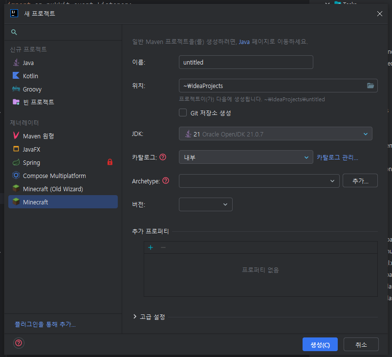
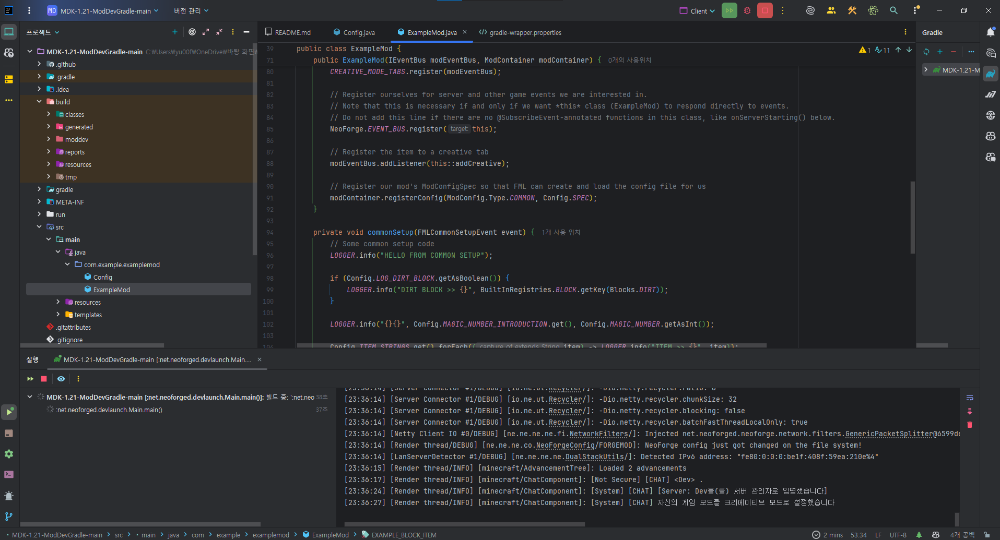
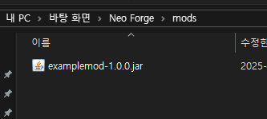
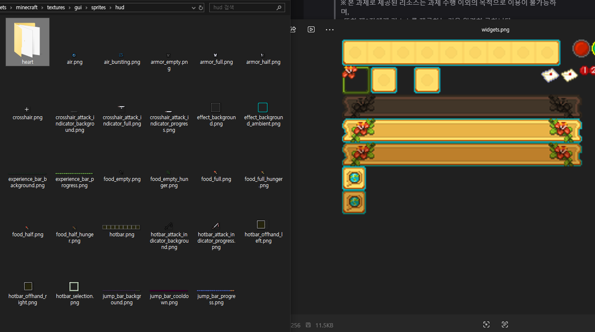
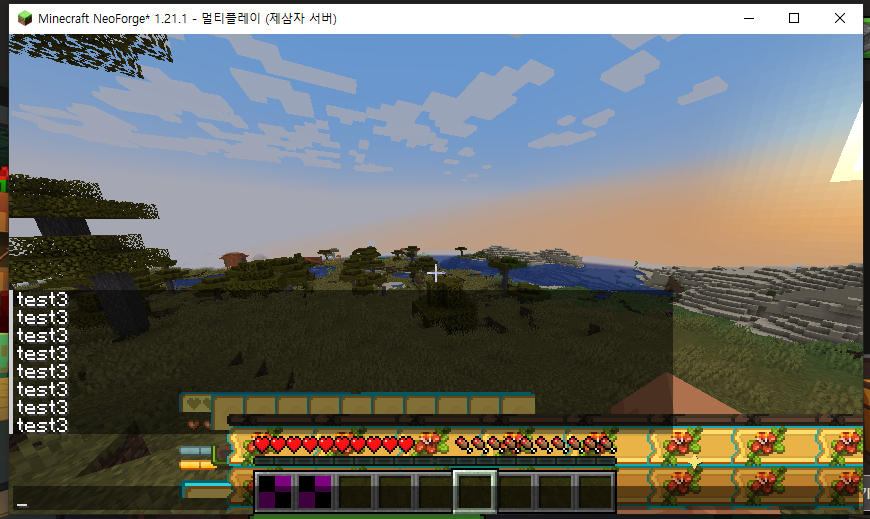
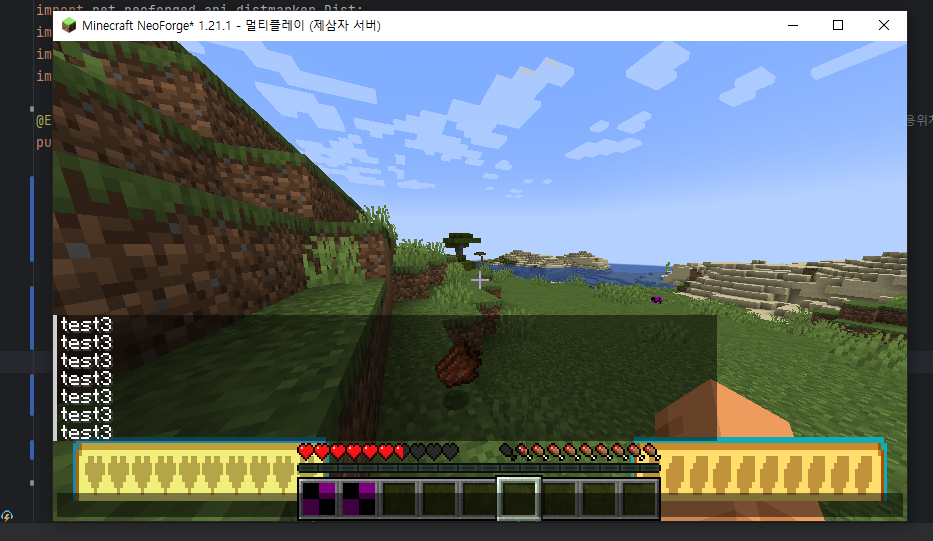

1. 시작: 버그
Minecraft 누르는 순간 Intellij가 먹통이 되는 현상으로 인해 할 줄 모르는 mod먼저..

2. 환경 구축 완료
서버 접속까지 ok

3. Dev 환경 접속
mod적용 접속 ok

4. gradle 설정
빌드시 서버/로컬 mod 폴더에 jar이 업데이트되도록 설정

5. 이미지 분할
ai로 대충 적당히 이것저것 잘라서 사용 시도
문제점: 안잘리는 부분이 있음
-> 직접 하나하나 자르는 방식으로 변경

6. 1차 적용 테스트
이미지 넣어보기

7. 자른 이미지 적용
이때 판단실수..//: texture를 바꾸는건가? 라는 생각을..


8. Sprite 문제점 발견
기본 이미지와 제공된 이미지 크기가 다름 (약 1.4배) -> 사소한 문제이므로 그냥 크게 사용


9. 텍스쳐 적용
잘못된상황: 아예 체력, 허기를 지우고 했어야했는데 텍스쳐를 바꿈
but. 체력, 허기 배경은 제시 상황에 맞아서 그냥 두기로 함.
조건에 약간 다르긴 하지만 크게 벗어나지는 않아보여서 그대로 사용
if. 배고픔 허기를 만약 텍스쳐 교체 방식이 아니였다면?
그냥 우측에서 이미지 자르기만 하면 되는 간단한거라 패스

10. 좌상단 플레이어 정보
돈은 string으로 임시 적용


11. 쿠키: 라마 vs 좀비
라마 승

12. 돈 통신 적용 및 업데이트
우측 기준에서 좌측으로 늘어나도록 적용
0. 마무리 영상
전체 내용을 마무리하는 영상입니다.
소요시간: 환경구축 2h
개발시간: 6h
中 삽질: 명령어적용버그(1.5H), 텍스쳐위치조정(1H), ///
소스 코드 / GitHub
gitignore 설정으로 인해 이미지 누락이 있을 수 있습니다.
GitHub
source code
yu-ffe / Assign_Mod
새 탭에서 열기 ↗